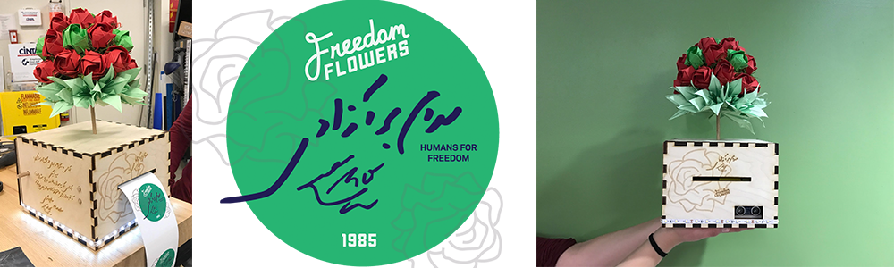
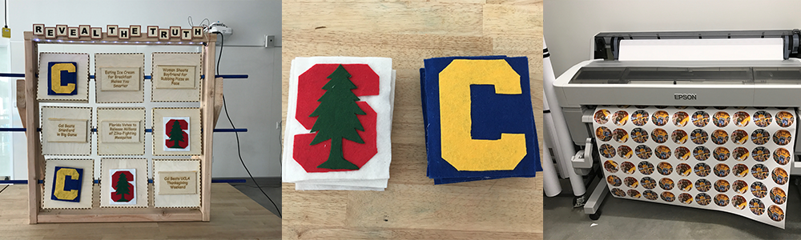
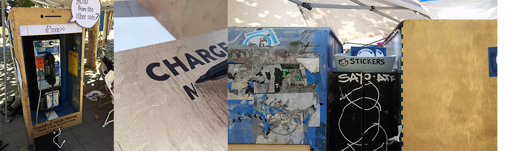

Freedom Flowers:
Our project mission was to create a hyper personal prototype for someone outside of our immediate social circle. We deliberately chose to design a prototype for local flower shop owner since 1985, Zafar Honarmand. Initially, there was a small language barrier that made it somewhat dificult to communicate. However, after three in depth interviews and after he got more comfortable around us, he opened up to us about his passion project (flower shop) and how he strongly believes in freedom, equality, and democracy for all countries. As a result, we designed Zafar a hyper-personal sticker machine, that dispenses stickers with a motion sensor. Ideally, when Zafar hands his customers their flowers, his hand will pass by the servo motion sensor, and a sticker will automatically print out. The physical box itself was completely personalized with Zafar’s Farsi handwriting on one side, and an English translation of his larger message and vision on the other, and finally, an engraving of his favorite type of Iranian flower with the title of his flower shop, “Freedom Flowers”. The stickers were hyperpersonal in many ways. The green sticker in itself represents freedom and growth, and his signature is on the stickers as well as the words, “Humans For Freedom” and the year 1985 to exemplify the history and longevity of his local flower shop. In addition, the hand-made origami is in the shape of a globe, and represents his macro vision of freedom for all countries. The flowers are red and green to embody the Iranian flag, but we chose to use origami to incorporate Japanese culture and show the power in the fluidity of freedom for all cultures. Our goal was to capture and make evident to the students, what Zafar’s flower shop stood for. For more detailed documentation please go here.
Here is a Short video of our process:
Reveal the Truth:
The prevalence of fake news is becoming a growing problem on social networking sites. Therefore, Reveal the Truth wants to test your ability to judge a headline’s credibility. After playing Reveal the Truth, players learn that not every headline they see is true (no matter how many shares or likes). The game is played with headlines placed throughout the board and players decide if they are true or false. They’ll flip it over and find the answer. If they get it right, they get to put a CAL marker, and if they get it wrong, and they get to put a STANFORD marker. The game results in players having to do their do-diligence and make sure they understand the context and read the actual article before falling for click-bait. For more detailed documentation please go here.
Here is a Short video of our process:
Critical Practices Projects
Call to the Future:
Our project calls attention the obsoleteness of technology by bringing visibility to a historical pay phone on UC Berkeley’s Sproul Plaza. In our observations of the site, we recognized that the pay phone went unnoticed by passing students who were more attentive to their mobile phones. In its outdatedness and neglect, we developed an installation that refurbished and repurposed the payphone in order to disrupt the social space. The installation was purposed to engage students with the pay phone and enhance its functional communication abilities. Reversing its outdated narrative, our installation included features that allowed students to interact with the site’s past, present, and future. These features gave students the incentive to learn about the phone’s past, to use the payphone as a charging station for their smart phones, and to write a message to future students. Our mission was to get students to once again interact with the space and recognize the approaching and rapidly advancing obsoleteness of modern technology. For more detailed documentation please go here.
Here is a Short video of our process: